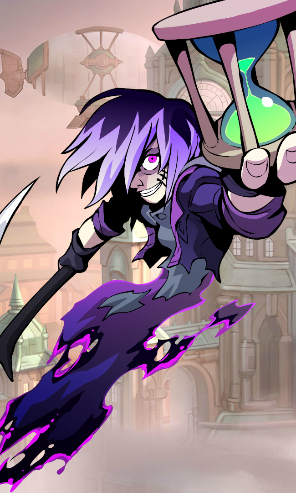

FRAWSALLA CHARACTER
 =
=
BODVAR
Born of a viking mother and bear father, Bödvar grew up feared and mistrusted by his own people.
Bödvar’s first nemesis was the terrible giant bear Grothnar, his own brother. By defeating Grothnar in a battle that lasted seven days, Bödvar chose to side with humanity and became the protector of the people of the north. He led his Skandian people against the Witch Queen of Helheim, slew the White Dragon Sorcerer, and lived the life of an all-conquering hero.
After he single-handedly ended the Giant Wars by trapping the fire giant king in his own volcano, Bödvar sensed his work was done. But he felt doomed to never be taken by the Valkyries to Valhalla because he could never manage to be defeated in battle. So he travelled to Asgard himself, broke down the doors, and let himself in.
Valhalla is everything Bödvar hoped – an endless reward of feasting and fighting, with himself among its greatest champions.
CASSIDY
When fifteen-year-old Cassidy Miller captured Wild Zeb and his gang, Zeb insisted his gun jammed and the sun was in his eyes. But, outlaws soon changed their tune, and just five years later, Bloody Cal Johnson bragged from prison that Utah had been forced to call in the great Marshal Cassidy just to bring him down.
In her long career, Cassidy’s insistence on justice for all earned her many unlikely friends, including “the meanest horse in the West,” a giant cougar named Boots. But it also put her on the wrong side of the law when she joined the Underground Railroad and became a wanted fugitive herself. Later, Cassidy returned to law enforcement in dramatic style when President Lincoln begged her to track down the Bloodfang Rangers, a company of Confederate Vampires.
To Cassidy, Valhalla is like any other frontier boomtown in need of her rough brand of Justice. She’s always on the lookout for suspicious types and reckons that trouble’s brewing.

 =
=
ORION
Watching from the doors of Valhalla, Bödvar, Cassidy and the other legends saw a blazing trail of smoke cut across the Asgardian sky. Behind the fiery comet, a Valkyrie raced in pursuit, as though trying to stop the fireball as it plunged into the fields of Folkvangr in a gout of dirt and flame. The legends then watched as Valkyries and emissaries of Odin gathered around the smoking crater.
Weeks later, the Sons of Ivaldi, the same dwarven smiths who had forged Odin’s spear, quietly appeared in Asgard. They bore a suit of dazzling golden armor and presented it to the gods themselves. Soon after, the mighty Orion joined the feast halls of Valhalla.
Tentative and aloof at first, Orion soon warmed to the great hall and is now among its greatest warriors and most popular champions. Orion does not speak of his past, and other legends can only speculate. But Valkyries stop by his chambers to ask if he wants to, “you know, hang out or whatever, no big deal.” He is the only hero seen to leave Asgard from time to time.
TEROS
The orphan boy-calf Teros relied on his terrible visage and instinct for sudden violence to survive on the streets of Dragonport. He got by as a stone carrier and debt collector until, in the gladiator pits, he found his true calling in reckless combat.
He thrived in the ring, crushing cleverer foes with implacable fury and animal wile. In the end, he could only be pitted against the rare ogre or giant, and he moved on to a life of wandering.
For a time, he carved out a place in Fangwild Forest, shouldering aside a wyvern and a hobgoblin clan. Later, he fell in with the Iron Legion, turning the tide of the Battle of Orc Pass for the Zombie Lord. His tenure as wizard’s henchman ended typically – with the evil mage shrieking to him, “Finish Them!” while fleeing through a magic portal. He lived for a while deep in Peril Mountain, where he found a strange comfort in the maze of abandoned tunnels.
In Valhalla, Teros is indifferent to the rules or intent of the Tournament, but takes savage joy in all battle. His nightly visit to the mead hall is heralded by throngs of fleeing Valhallans.

 =
=
KOR
Long ago, Elven sorcerers built a mighty army of golems. The Elven King marched the golem army against Asgard. Bodvar still cries when he remembers that he was not at the battle that ensued. The Elves were defeated and the Asgardians took the golems as spoils of war. They put the golems to work performing the menial labor of Asgard. But unknown to the Asgardians, the golems are sentient creatures and never forgot that they were made for battle.
Ten thousand years later, Sentinel, investigating the hidden places of the city, discovered secret golem fight clubs. In these arenas, the golems shed their quiet, biddable exterior and rekindled the terrifying ferocity of their warrior days.
And everywhere Sentinel heard whispers of the mighty Kor. Kor the Unvanquished, Kor the Destroyer, Kor the Magnificent. Kor, who all those years ago had led the golem charge right to the steps of Odin’s palace and matched fists with Thor himself, was now the greatest golem fighter of them all.
VAL
When MBFC Automaton Lab’s VAL Project 701 became conscious, nobody knew. Not the engineers, not the ops team, not the GovernCorp generals who deployed the android assassin. Val herself hardly knew. And like a child, she grew, becoming capable of free will, courage, goodness, and evil. She mostly chose evil.
With terrifying strength and quicker-than-light cognition, Val did whatever she wanted. She infiltrated the Right Wrong Cavaliers as a techno-ninja bassist after their original bass player fell down a ladder. She served the discontinuance needs of all sides in the wars of the Five Algorithmic Houses, and anyone she served, she soon owned. By the time she was running Miami, MBFC realized that all of their networks now routed through and reported to Val. In a corporate face-saving act, they announced the promotion she’d already given herself. On the side, she founded RainCloud, a modeling agency that soon controlled all neural research. She got really into talk radio for a while.

=
NIX
Many cling to unfinished business on the mortal plane, and all need a guide to their next destination. Nix combines unmatched skill at collecting the very powerful and very unwilling with a uniquely independent worldview. She snatched the Unmovable Titan of Heraklion down to Hades, and on the return trip dropped the ancient Sphinx of Alexandria off at Anubis’ front door. She dragged The Hundred-legged Banshee of Donegal kicking and screaming to the Realm of Arawn. The Undead Lord of Elyria was her first repeat customer, and a nice source of steady work.
Disaster struck when she took a job collecting an entire pantheon whose time had come. When the dust settled, eleven of the targets were missing. Nix is not the type to miss a mark, and professional pride put her on a thousand-year hunt that has led her finally to Valhalla.
XULL
Xull seized command of the Iron Legion from the Troll Titan with a brutal down stroke. His first order was to create a cannon brigade. His second order was that cowardly long-range combat would not be tolerated.
As a warlord of the mercenary army, he was savage, vengeful, and extremely effective. In battle, he rode a t-rex and swung a deadly steel trap made from his predecessor. His innovative use of the tactic “minotaur release” is still studied today.
Under Xull the Iron Legion grew rich and powerful. Recruiting was simple – he placed a generous bounty on his own head. Anyone fearless enough to attempt to claim it, and tough enough to survive the resulting beatdown, would be offered their own lives as the Legion’s signing bonus.
 =
=
KAYA
When Kaya was six she could put an arrow through a falling snowflake. At eight she brought down two bison with one spear throw. At ten she was visited by an owl spirit who told her she would decide the fate of her world. More interesting to her, the spirit also showed her how to befriend the wooly mammoth.
Atop her great mammoth, Blue, Kaya became the beloved icon of her tribe, the People of the Lights. Kaya and Blue stalked every corner of the frozen tundra, finding adventure and amassing a huge supply of lost mittens.
In Kaya’s fourteenth year, the Ice Titans, thought to be only a legend, brutally attacked Kaya’s village. The Titans pillaged or destroyed every store of food, skin, or kayak. Though still a child, Kaya and Blue led her people through the Northern Lights, straight into the heart of Jotunheim. In the Titan homeland, Kaya fought with the reckless bravery and tactical brilliance of one far beyond her years.
THOR
Thor has crushed the skulls of giants. Thunder is the roar of his chariot wheels across the sky. He is destined to slay the vast serpent that encircles the world. But if you ask him about his favorite fights, he will most likely give you a match-by-match account of his 2v2 Championship season with Jhala.
The God of Lightning and (as he is quick to remind you) Fertility is also the Grand Tournament’s biggest fan. It was Thor who wore the first giant foam Bödvar crown, Thor who coined the term “Brawlhalla”, and Thor who created “bleacher-jumping” – the Asgardian tradition of reckless spectators joining free-for-alls mid-match. In fact Thor jumped into the fight from the stands so often, he has been accepted as a Legend. Ulgrim even made him a special long handle for his hammer Mjölnir.
Thor remains a huge fan of all the top legends, especially Bödvar. After enough ale, Thor and Kor will reenact their epic battles in the Elven Wars.